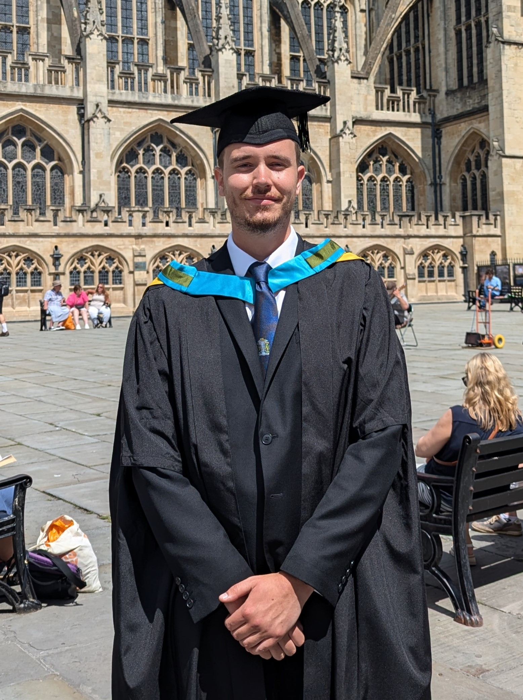
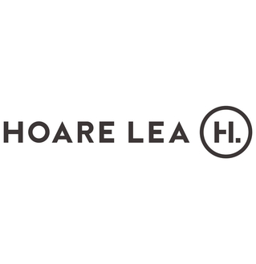
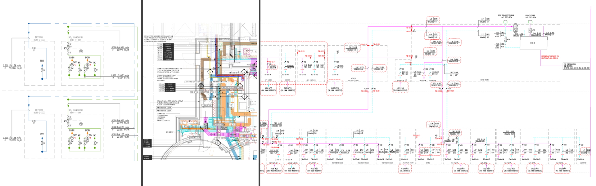

About Me
Hi I'm Miles Mitchell. I am a University of Bath graduate with a 2:1 masters degree in MEng Integrated Design Engineering. I thoroughly enjoyed my course at University which started with me following a Mechanical Engineering course, to gain a solid base of understanding, then transitioning to Design Engineering from my third year onwards. Design has always been a passion of mine and have always opted to take this subject when given the choice. Futhermore I am always looking for more opportunities to develop my craft and learn new skills along the way.
I am a very organised person which has been key to my success in a number of challenges such as my A-Level studies and University degree. This will undoubtedly help me solve the real-life problems I can expect working in the engineering and design fields. In addition, my university housemates nominated me to coordinate our rental and utilities contracts. I am highly motivated and always want to push myself to do more. This was the reason I took up the Ten Tors challenge, and my determination assisted me to completion.
My great teamworking skills were thoroughly tested when my team and I won a local Rotary Design and Technology Tournament on multiple occasions, in which we needed to create a product to solve a set problem. These skills were further developed by assuming a leadership role in some of my group projects at university as well as acting as a "young leader" at weekly cub scout meetings for approximately 3 years.
I would also say that I am a very reliable and mature person, which is likely to be why I was given the position of Principle Student for Design and Technology at my sixth form and given the opportunity to mentor new students within the University of Bath Mechanical Engineering department.
Work Experience
Field International

One week during May 2017 + One week during July 2017
While on work experience during Year 10 I spent a week at precision engineering firm Field International. Field International is a global precision engineering company specialising in the aerospace industry. They produce parts for the likes of Boeing, Rolls Royce and many others alongside defence entites such as BAE Systems and the MOD.
During this first introductory week I got hands on experience in all departments of the company and enjoyed it so when offered the chance to go back I couldn't say no. During my second week of experience I spent most of my time milling and turning which gave me valueable experience in Desiging for Manufacture.
Hoare Lea
4th July 2022 - 9th September 2022
12th June 2023 - 22nd September 2023
During my summer break between second and third year of university I decided to take up a placement. This was a placement at building services consultants Hoare Lea. Hoare Lea is a nationwide company with over 1000 staff across the country and work on many of the leading projects in their field. Recently they aquired work on the Audeley Square project, one of the most expensive developments in Europe currently, which I am fortunate enough to say I contributed to.
I was initially unfamiliar with the building services industy but wanted to try someething new and working in the office / studio setting allowed me to gain a great understanding quickly through my coworkers. I gained a great knowledge of CAD suites and was able to transfer my skills over from softwares I'd used previously during university. My main task was working on RIBA Stage 3 schematics, however, I did perform some Plant Room sizing calculations in Stage 2 for one of the projects I worked on. Additionally, second time around I was trusted with updating internal company guidance documents as well as working on collaborative sustainability projects within the company. This placement gave me a great understanding of the office / studio setting while developing my ability to design to a high standard while sticking to constraints. Some examples of my work as well as work I contributed to are shown below:
